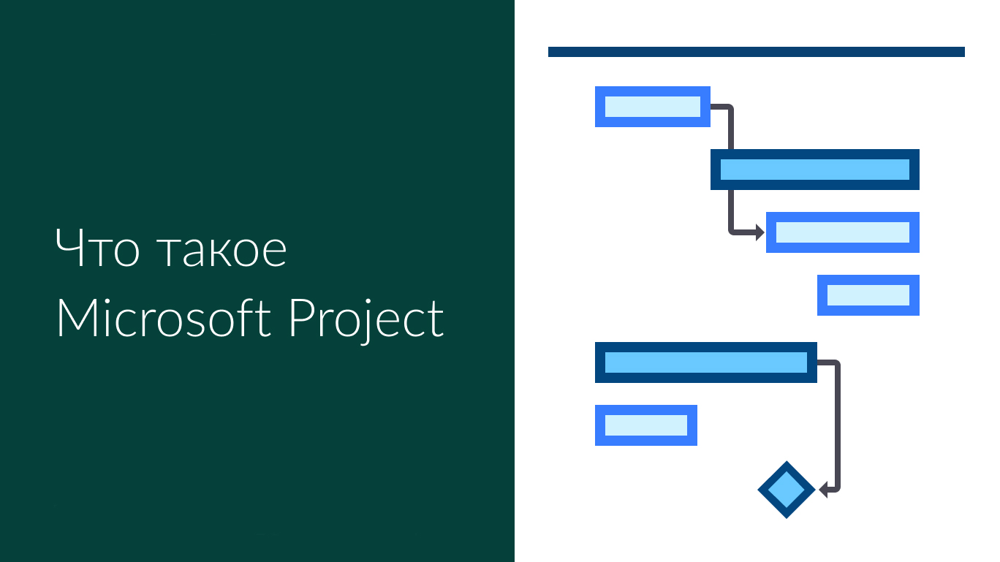
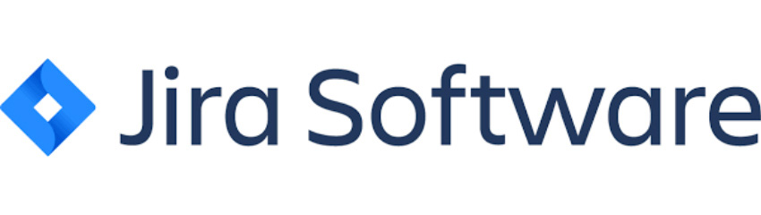

Системы управления проектами
Система управления проектами (СУП) — это набор инструментов, методов, методологий, ресурсов и процедур, используемых для управления проектом. Она может быть как формальной, так и неформальной и помогает менеджеру проекта эффективно завершить проект. Система управления проектами — это ряд процессов и связанных с ними функций контроля, объединенных в единую целенаправленную структуру.
Система управления проектами строится на основе плана управления проектом, который описывает то, как будет использоваться система. Содержание системы управления проектом изменяется в зависимости от области приложения, особенностей организации, сложности проекта и доступности необходимых ресурсов. Система строится так, чтобы максимально соответствовать стратегическим целям и производственным ресурсам клиентской организации.
Цели системы управления проектами
- Повышение эффективности сотрудников компании при работе над проектами.
- Улучшение качества управления проектами руководителями проектов.
- Повышение эффективности управления всем портфелем проектов компании – больше проектов в срок и в рамках бюджета с меньшими затратами.
Задачи системы управления проектами
Для достижения указанных целей необходимы соответствующие инструменты. Если детально не описывать весь функционал, то системы управления проектами предназначены для решения следующих задач:
- Обеспечить руководителя проекта инструментарием планирования проекта и контроля хода его реализации;
- Предоставить участнику проекта понятный инструмент для выполнения задач и доступа ко всей необходимой для их выполнения информации;
- Руководителю подразделения дать инструмент контроля загрузки сотрудников по проектным и непроектным задачам, предоставить информацию для принятия решения о назначении сотрудников на новые проекты, перераспределения нагрузки между ними;
- Директору проектного офиса предоставить удобный инструмент, который позволит автоматизировать рутинные операции и установить полный прозрачный контроль за состоянием всего портфеля проектов и качеством работы конкретных руководителей проектов;
- Руководителю компании обеспечить единую панель мониторинга всех проектов с возможностью оперативного анализа отклонений и принятия управленческих решений;
- Акционерам компании важно видеть соответствие портфеля выполняемых проектов стратегическим целям компании.
Требования к функциональным возможностям информационных систем управления проектами вытекают из особенностей процессов управления проектами в каждой конкретной организации.
Ниже приведены некоторые популярные системы управления проектами.
Microsoft Project
Microsoft Project ― это программа для управления проектами. Она помогает менеджерам контролировать исполнение поставленных задач, а также грамотно распределять ресурсы. Основной рабочий инструмент в ней — диаграмма Ганта.
Возможности MS Project
Несмотря на то что MS Project — это знакомый многим менеджерам инструмент для управления проектами, работа в нем не будет легкой даже для опытных управляющих.
В этой программе есть несколько параметров, на базе которых и строится разработка планов, анализ прогресса и эффективности, расчет критического пути.
- Задача
Любая работа имеет конечную цель. Для успешного планирования нужно составить список задач и подзадач, которые требуют решения.
- Ресурс
Чаще всего это сотрудники и члены команды, задействованные на проекте. При этом ресурсом может быть и материал, и оборудование.
- Назначение
Расчет затрачиваемых ресурсов для выполнения конкретной задачи. Назначения помогают сориентироваться во времени реализации проекта.
Microsoft Office Project поможет:
- Пошагово разработать и детализировать проект;
- Рассчитать время и трудозатраты;
- Оптимизировать план;
- Сделать анализ текущего состояния проекта и прогресса.
Jira
Jira Software — это инструмент управления рабочим процессом для команд разработчиков ПО, которые хотят систематизировать и отслеживать свою работу. Невероятная гибкость позволяет настроить Jira в соответствии с уникальным рабочим процессом команды.
Приложение построено по принципам канбан- и скрам-досок, давней практики организации задач. Но эти принципы дополняются массой вспомогательных механизмов, которые добавлялись в приложение исключительно с целью упростить создание новых приложений, добавить в них функции, исправить ошибки и т.п. Также эта система управления проектами исповедует Agile-методику разработки.
Для чего используют Jira?
Jira создавали для программистов. «Затачивали» каждый аспект под нужды разработчиков. Поэтому работает и выглядит она иначе. Не слишком универсально. В связи с этим вырос ряд конкретных сценариев, в которых применяется JIRA:
- Наглядная организация списка задач.
- Управление проектом и командой, занимающейся его развитием.
- Разработка ПО с нуля или добавление новых функций.
- Управление задачами, связанными с маркетинговой составляющей продукта.
- Отслеживание ошибок в программе и их своевременное исправление.
Алгоритм работы с Jira
Процесс работы с Jira можно разложить на 6 простых шагов:
- Для начала нужно загрузить Jira, создать профиль и запустить утилиту. Можно использовать аккаунты Apple и Google.
- В окне приложения необходимо выбрать пункт Create Project.
- Программа предложит список шаблонов для доски с задачами (для разработчиков, для маркетологов и т.п.). Выбираем ту, что лучше всего соответствует целям команды и стилю работы в вашей компании.
- Затем Jira задаст пару вопросов по поводу того, пользовались ли вы ранее Agile и канбан. На основе ответов программой будет принято решение о целесообразности внедрения обучения в интерфейс.
- Настраиваем колонки под своим нужды (если то, что было предложено в шаблоне, не на 100% удовлетворяет вашим требованиям).
- Создаем задачу (пункт Create).
- Приглашаем других пользователей (то есть членов команды) работать с созданной вами доской (пункт Invite).
Полезные материалы
7 шагов для начала работы с Jira Software
Использование MS Project для управления проектами по разработке ПО.